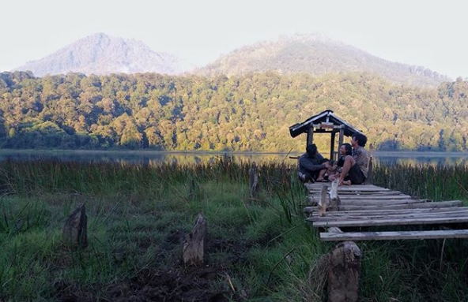
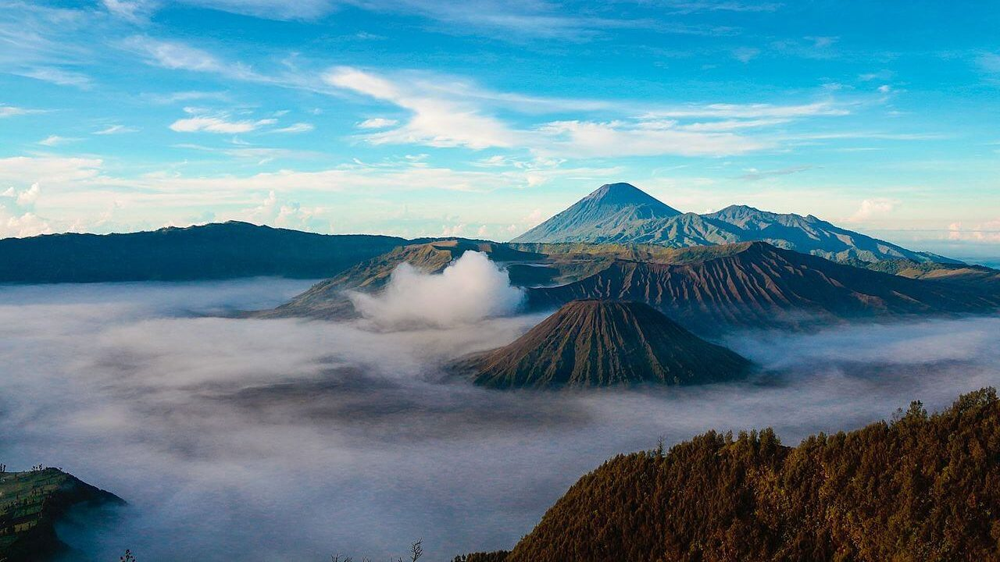
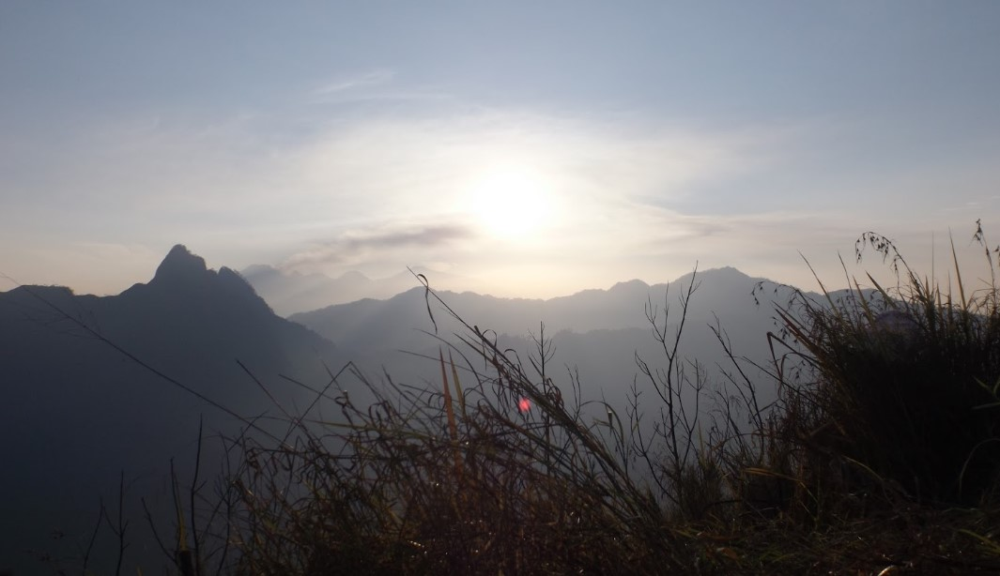
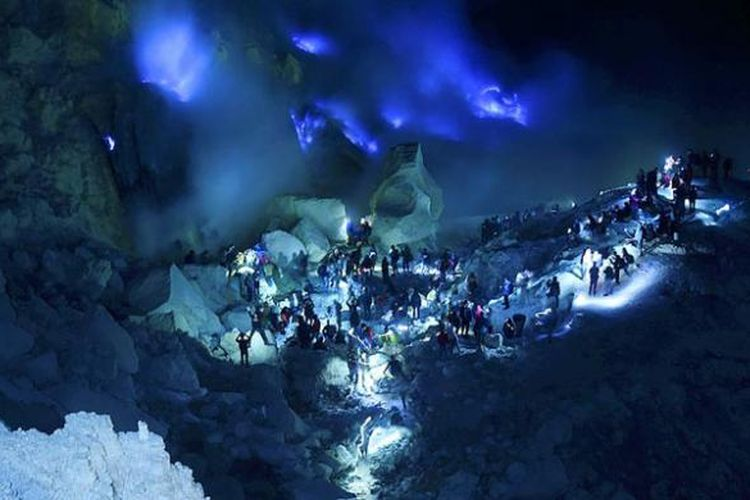
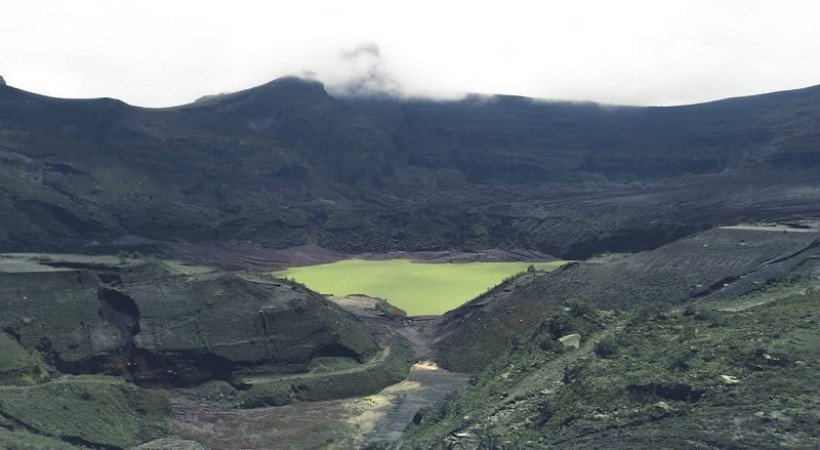

Gunung Argopuro merupakan salah satu gunung dengan jalur atau trek terpanjang di Pulau Jawa. Gunung berapi yang sudah tidak aktif ini memiliki ketinggian 3.088 meter di atas permukaan laut (mdpl).
Menariknya, gunung ini menyajikan trek yang unik dan panjang, contohnya jalur dari Desa Baderan ke Bremi memiliki jarak sekitar 45 kilometer. Lintasannya pun beragam, mulai dari hutan, sabana, dan ada danaunya juga.
Gunung Argopuro terletak di perbatasan Kabupaten Situbondo, Probolinggo, dan Bondowoso, Gunung Argopuro sendiri memiliki ketinggian 3.088 Mdpl.Terjepit di antara kepopuleran Semeru dan Raung, gunung ini menyajikan sebuah keindahan alam yang tidak bisa diungkapkan dengan bahasa manusia. Perawannya hutan alam disertai binatang-binatang liar yang masih menghuni dataran tinggi Yang ini menjadikannya sebuah gunung api tidak aktif yang patut diperhitungkan untuk dikunjungi.
Keindahan alam ini juga ditambah dengan predikatnya sebagai pemegang jalur pendakian terpanjang di Pulau Jawa, mendampingi Gunung Semeru sebagai pemegang puncak tertinggi di Pulau Jawa. Sekitar empat puluh kilometer perjalanan pendakian adalah makanan yang harus disantap habis untuk naik dan turun di Argopuro berawal dari Baderan dan berakhir di sebuah desa bernama Bermi

Sejarah gunung bromo dimulai ketika pada masa Kerajaan Majapahit, pada masa itu terjadi penyerangan besar-besaran yang mengakibatkan masyarakat diharuskan berpindah dari kampung halaman hingga akhirnya mereka mengungsi di 2 tempat, satu di pulau bali dan sebagian di lereng Gunung Bromo, ini menjadi cikal bakal agama yang banyak di anut di dua tempat tersebut.
Nama “Tengger” dipercaya datang dari Legenda Roro Anteng serta Joko Seger. “Teng” adalah akhiran nama Roro An-“teng” serta “ger” adalah akhiran nama dari Joko Se-“ger” serta Gunung Bromo juga diakui juga sebagai gunung suci. Orang-orang Hindu menyebutnya dengan nama Gunung Brahma. Sedang orang Jawa menyebutnya Gunung Bromo.Tempat WisataGunung Bromo
- Penanjakan Gunung Bromo
- Pasir Berbisik
- Bukit Teletubies Gunung Bromo
- Wisata Agro Kebun Strawberry

Gunung Anjasmoro merupakan sebuah gunung yang terdapat di pulau Jawa, Indonesia. Ketinggian gunung ini ialah 2.282 meter. Gunung Anjasmoro termasuk ke dalam wilayah Kabupaten Jombang, Kabupaten Mojokerto, dan Kota Batu, Jawa Timur. Gunung Anjasmoro terletak satu kluster dengan Gunung Argowayang dan terletak berdekatan dengan Gunung Arjuno-Welirang. Pendakian Anjasmoro memang tak terlalu populer dengan rute gunung lain di Jawa Timur. Namun, diantara yang tak populer itu, ada satu jalur yang paling dikenal dari Gunung Anjasmoro ini : Puncak Cemorosewu via Carangwulung-Wonosalam. Lokasi start pendakian berada di Segunung yang memiliki ketinggian 755 mdpl.Pegunungan Anjasmoro bukan merupakan gunung tunggal, melainkan sebuah gugusan pegunungan yang memilik banyak puncak. Anjasmoro membentang dari Mojokerto, Jombang, Malang, Batu, hingga Kediri yang mendapat bagian kakinya. Puncak Sejati berada di Malang, sedangkan Puncak Anjasmoronya sendiri malah menempati posisi tertinggi ketiga. Yang menarik, titik tertinggi di Mojokerto ada Puncak Kukusan dengan lekuknya yang begitu ikonik. Sedangkan Jombang memiliki Puncak Cemorosewu sebagai titik terpopuler, yang menjadi jalur pendakian paling ramai di antara seluruh track pendakian Anjasmoro.

Kawah Ijen adalah sebuah kawah dari Gunung Ijen yang memiliki panorama indah dan bisa dikunjungi sebagai objek wisata pegunungan. Pemandangan yang ditawarkan akan memberikan ketenangan tersendiri bagi para wisatawan. Walau pada dasarnya wisatawan perlu mendaki dengan bersusah payah, namun saat berada di puncaknya akan ada pemandangan menakjubkan yang mungkin tidak ada di kawah gunung lainnya.
Salah satu keunggulan dari Kawah Ijen adalah pemandangan Blue Fire. Blue Fire itu sendiri adalah pemandangan api biru dari belerang di Kawah Ijen yang konon katanya hanya ada 2 di dunia. Blue Fire ini hanya bisa dilihat saat hari sedang gelap, alias malam hari. Hal inilah sisi unik dari Gunung Ijen, dimana wisatawan yang ingin melihat Blue Fire harus mendaki mulai tengah malam agar tidak kehilangan pemandangan tersebut.Untuk menuju Kawah Ijen, perjalanan bisa dilakukan dari Kota Banyuwangi dengan menuju daerah Paltuding. Di sana akan ada loket yang buka pada pukul 01.00 dini hari. Pendakian dilakukan dari Paltuding mulai dini hari setelah membeli tiket hingga jam 12.00 siang harinya.
Rute pendakian dari Paltuding sangat mudah dilihat, karena memang hanya terdiri dari 1 jalur pendakian. Dari Paltuding hingga Kawah Ijen, setidaknya dibutuhkan waktu mendaki kurang lebih 3 jam (tergantung stamina tubuh masing-masing). Jika ingin melihat blue fire, tentu harus tiba di Kawah Ijen sebelum jam 04.00 dan itu artinya pendakian harus dilakukan dengan cukup cepat.
Jalur untuk menuju Kawah Ijen terbilang cukup melelahkan, karena semua jalur adalah tanjakan dan hampir tidak ada jalur turunan sama sekali. Tentunya untuk wisatawan yang belum terbiasa naik gunung diperlukan adaptasi yang sangat ekstra. Maka dari itu, sebelum menuju Ijen ada baiknya melakukan latihan fisik terlebih dahulu untuk mempersiapkan tubuh agar mudah mendaki.

memiliki berbagai destinasi yang layak dikunjungi. Apalagi memang kawasan pegunungan biasanya menawarkan keindahan alam dan kesejukan udara yang sangat menenangkan dan membuat nyaman.
Setelah meletus beberapa tahun silam, salah satu objek wisata andalan Kabupaten Kediri, Jawa Timur ini malah semakin banyak dikunjungi wisatawan baik domestik maupun mancanegara. Keindahan panorama pegunungan yang ditawarkan menjadi daya tarik utama wisatawan untuk berkunjung ke wisata gunung kelud.Air Panas Gunung Kelud
Selanjutnya kamu bisa menikmati wisata gunung kelud berupa air panas. Di sini kamu bisa berendam atau hanya mencelupkan kaki ke dalam air panas. Tentunya wisata gunung kelud satu ini sangat cocok kamu kunjungi untuk menghangat badan. Apalagi udara di gunung yang dingin tentu akan membuat berendam di air panas semakin menyenangkan.Air panas ini bersumber dari mata air panas yang terbentuk secara alami di gunung kelud. Air panas alami tersebut menyatu dengan aliran sungai, sehingga pertemuan dari keduanya menciptakan air hangat yang nyaman untuk berendam.
Agrowisata Margomulyo merupakan salah satu hasil dari pengembangan wisata gunung kelud pasca erupsi. Konsep agrowisata diusung pemerintah untuk menarik wisatawan berkungjung kesini.Taman ini dikenal dengan nama Taman Agro Kediri. Kamu akan disuguhkan pada sebuah kawasan taman yang indah dan ditata dengan cukup baik. Tidak hanya tentang keindahan taman bunga dan alam sekitar, di tempat ini pengunjung juga dapat mengetahui sejarah maupun kisah masa lalu tentang Gunung Kelud.
Jenis tanaman yang ada di agrowisata ini sendiri cukup beragam. Yang paling menarik adalah adanya tanaman bunga-bungaan seperti krisan, mawar, matahari, kana, hujan mas, refugia, dan sebagainya. Salah satu wisata gunung kelud ini sangat cocok dijadikan spot foto.
Kampung Durian
Wisata gunung kelud selanjutnya adalah kampung durian. Area wisata Kampung Durian luasnya hanya sekitar 1 hektar saja. Namun di dalamnya ada banyak fasilitas yang cukup lengkap. Dengan adanya 30 pohon durian, di sini kamu bisa menikmati durian dengan puas.
Di tempat ini, wisatawan akan mendapatkan kesempatan untuk mencicipi berbagai macam jenis durian. Selain itu pengunjung juga bisa mempelajari tentang tata cara menanam durian, hingga mengolahnya. Tidak hanya buahnya, pengunjung juga bisa mencicipi makanan hasil olahan durian. Makanan tersebut bisa berupa ketan durian, kolak durian, hingga pancake durian.